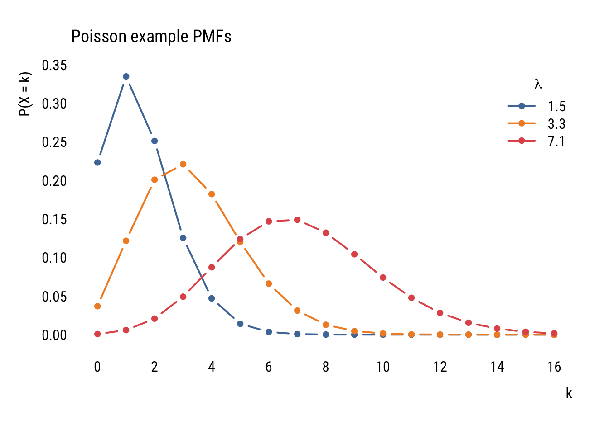
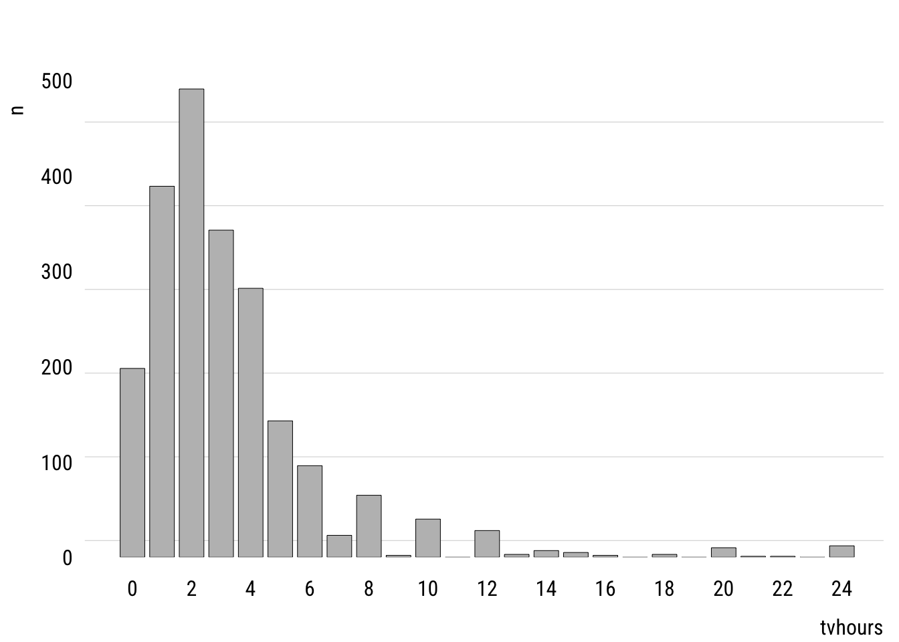
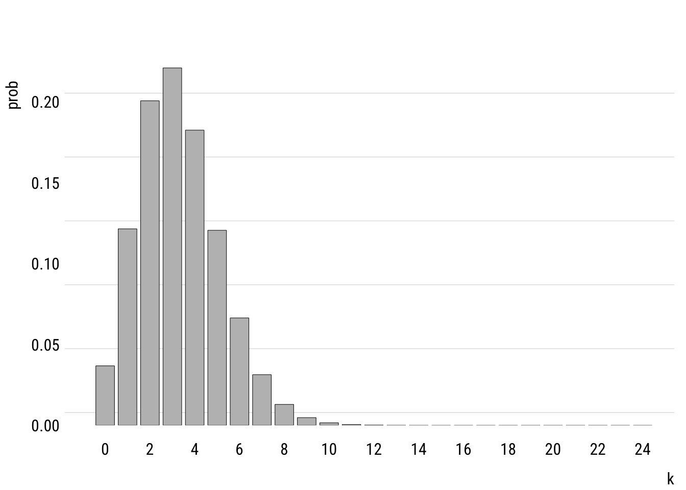

pacman::p_load(dplyr,
tidyr,
broom,
janitor,
tinyplot,
ggplot2)Poisson regression and models for tables
Goals
To introduce Poisson regression and show how it can be used to analyze contingency table data.
Set up
Load packages and set themes as usual.
tinytheme("ipsum",
family = "Roboto Condensed",
palette.qualitative = "Tableau 10",
palette.sequential = "agSunset")# Match tinyplot ipsum style
theme_set(
theme_minimal(base_family = "Roboto Condensed") +
theme(panel.grid.minor = element_blank())
)
# Match Tableau 10 palette used by tinytheme (hex codes from ggthemes)
tableau10 <- c("#5778a4", "#e49444", "#d1615d", "#85b6b2", "#6a9f58",
"#e7ca60", "#a87c9f", "#f1a2a9", "#967662", "#b8b0ac")
options(
ggplot2.discrete.colour = \() scale_color_manual(values = tableau10),
ggplot2.discrete.fill = \() scale_fill_manual(values = tableau10)
)We will use the 2024 GSS data to illustrate.
d <- readRDS("data/gss2024.rds") |>
haven::zap_labels() |>
select(tvhours, degree, sex) |>
drop_na() |>
mutate(sex = factor(sex,
labels = c("M", "F")), # sex as a factor
degree_fac = factor(degree,
labels = c("none", "HS", "AA", "BA", "grad")))Tables
If you’ve taken any stats before, you’ve probably seen the good old chi-square test. You generally use it to analyze categorical data (where none of the variables involved is continuous).
Let’s look at the contingency table of degree and sex in the 2024 GSS. We will use the janitor::tabyl() function as a more capable version of the base R table() function.
xtab <- d |>
tabyl(sex, degree_fac)
xtab sex none HS AA BA grad
M 66 471 66 212 130
F 117 516 120 260 186The good old chi-square test asks: are these two variables independent? It calculates this as follows:
\[ \chi^2 = \sum \frac{(O_i - E_i)^2}{E_i} \]
where \(i\) indexes table cells, \(O\) means “observed,” and \(E\) means “expected values if independent.”
We can do this easily in R.
xtab |>
chisq.test(tabyl_results = TRUE)
Pearson's Chi-squared test
data: xtab
X-squared = 16.893, df = 4, p-value = 0.002027This doesn’t seem like a “model”—because it’s not. But it turns out we can make it into a model. But we’ll need to first consider a new probability distribution.
Poisson
You are, of course, familiar with the normal distribution. That’s the one we’ve been using the whole semester.
The Poisson distribution is a different distribution that is often used for count outcomes—that is, for integer variables that can’t go below zero.
Unlike the normal distribution, which assigns a probability density to all the real numbers from \(-\infty\) to \(\infty\), the Poisson distribution is a discrete probability distribution that assigns a finite probability to all positive integers using a a probability mass function.
Here’s the formula, though you probably won’t find it too useful yet.
\[ P(X = k) = \frac{\lambda^k e^{-\lambda}}{k!} \]
Unlike the normal distribution, which has two parameters (\(\mu\) and \(\sigma\)), the Poisson distribution just has one parameter: \(\lambda\). This number governs the shape of a given Poisson distribution and is both its mean and the variance.
Here are some examples:
Data prep
poisson_values <- expand_grid(
lambda = c(1.5, 3.3, 7.1),
x = 0:16) |>
rowwise() |>
mutate(prob = dpois(x, lambda = lambda))Show code
plt(prob ~ x | factor(lambda),
data = poisson_values,
type = "b",
xlab = "k",
ylab = "P(X = k)",
ylim = c(0, .35),
lw = 2,
xaxb = seq(0, 16, 2),
grid = FALSE,
legend = legend("topright", title = expression(lambda)),
main = "Poisson example PMFs")
Let’s look at the unconditional distribution of tvhours.
Data prep
counts <- d |>
count(tvhours) |>
complete(tvhours = 0:24, fill = list(n = 0))Show code
plt(n ~ tvhours,
data = counts,
type = "bar",
xaxb = seq(0, 24, 2),
grid = grid(nx = NA, ny = NULL, lty = "solid"))
The mean of tvhours is 3.3. A Poisson with \(\lambda =\) 3.3 looks like this.
Data prep
mean_tv <- mean(d$tvhours)
pois_dist <- tibble(
k = 0:24,
prob = dpois(k, mean_tv)
)Show code
plt(prob ~ k,
data = pois_dist,
type = "bar",
xaxb = seq(0, 24, 2),
grid = grid(nx = NA, ny = NULL, lty = "solid"))
m1 <- glm(tvhours ~ sex + degree_fac,
data = d,
family = poisson())
summary(m1)
Call:
glm(formula = tvhours ~ sex + degree_fac, family = poisson(),
data = d)
Coefficients:
Estimate Std. Error z value Pr(>|z|)
(Intercept) 1.43501 0.03872 37.058 < 2e-16 ***
sexF 0.06015 0.02411 2.495 0.012608 *
degree_facHS -0.14656 0.03911 -3.747 0.000179 ***
degree_facAA -0.45775 0.05654 -8.096 5.7e-16 ***
degree_facBA -0.41032 0.04462 -9.195 < 2e-16 ***
degree_facgrad -0.65570 0.05151 -12.729 < 2e-16 ***
---
Signif. codes: 0 '***' 0.001 '**' 0.01 '*' 0.05 '.' 0.1 ' ' 1
(Dispersion parameter for poisson family taken to be 1)
Null deviance: 5472.7 on 2143 degrees of freedom
Residual deviance: 5192.6 on 2138 degrees of freedom
AIC: 10911
Number of Fisher Scoring iterations: 5library(sandwich)
library(lmtest)Loading required package: zoo
Attaching package: 'zoo'The following objects are masked from 'package:base':
as.Date, as.Date.numericcoeftest(m1, vcov = vcovHC(m1, type = "HC1"))
z test of coefficients:
Estimate Std. Error z value Pr(>|z|)
(Intercept) 1.435006 0.083485 17.1887 < 2.2e-16 ***
sexF 0.060146 0.042724 1.4078 0.15919
degree_facHS -0.146565 0.085979 -1.7047 0.08826 .
degree_facAA -0.457745 0.100139 -4.5711 4.852e-06 ***
degree_facBA -0.410323 0.092133 -4.4536 8.444e-06 ***
degree_facgrad -0.655704 0.095073 -6.8968 5.317e-12 ***
---
Signif. codes: 0 '***' 0.001 '**' 0.01 '*' 0.05 '.' 0.1 ' ' 1dcounts <- d |>
summarize(freq = n(),
.by = c(degree_fac, sex)) |>
arrange(sex, degree_fac)m1 <- glm(freq ~ 1,
data = dcounts,
family = poisson())
summary(m1)
Call:
glm(formula = freq ~ 1, family = poisson(), data = dcounts)
Coefficients:
Estimate Std. Error z value Pr(>|z|)
(Intercept) 5.3678 0.0216 248.5 <2e-16 ***
---
Signif. codes: 0 '***' 0.001 '**' 0.01 '*' 0.05 '.' 0.1 ' ' 1
(Dispersion parameter for poisson family taken to be 1)
Null deviance: 968.25 on 9 degrees of freedom
Residual deviance: 968.25 on 9 degrees of freedom
AIC: 1040
Number of Fisher Scoring iterations: 5dcounts$m1_preds <- predict(m1, type = "response")m2 <- glm(freq ~ 1 + sex,
data = dcounts,
family = poisson())
summary(m2)
Call:
glm(formula = freq ~ 1 + sex, family = poisson(), data = dcounts)
Coefficients:
Estimate Std. Error z value Pr(>|z|)
(Intercept) 5.24175 0.03253 161.136 < 2e-16 ***
sexF 0.23806 0.04350 5.473 4.43e-08 ***
---
Signif. codes: 0 '***' 0.001 '**' 0.01 '*' 0.05 '.' 0.1 ' ' 1
(Dispersion parameter for poisson family taken to be 1)
Null deviance: 968.25 on 9 degrees of freedom
Residual deviance: 938.08 on 8 degrees of freedom
AIC: 1011.8
Number of Fisher Scoring iterations: 5dcounts$m2_preds <- predict(m2, type = "response")m3 <- glm(freq ~ 1 + sex + degree_fac,
data = dcounts,
family = poisson())
summary(m3)
Call:
glm(formula = freq ~ 1 + sex + degree_fac, family = poisson(),
data = dcounts)
Coefficients:
Estimate Std. Error z value Pr(>|z|)
(Intercept) 4.39024 0.07782 56.414 < 2e-16 ***
sexF 0.23806 0.04350 5.473 4.43e-08 ***
degree_facHS 1.68518 0.08048 20.938 < 2e-16 ***
degree_facAA 0.01626 0.10412 0.156 0.876
degree_facBA 0.94749 0.08708 10.881 < 2e-16 ***
degree_facgrad 0.54626 0.09289 5.881 4.09e-09 ***
---
Signif. codes: 0 '***' 0.001 '**' 0.01 '*' 0.05 '.' 0.1 ' ' 1
(Dispersion parameter for poisson family taken to be 1)
Null deviance: 968.245 on 9 degrees of freedom
Residual deviance: 17.065 on 4 degrees of freedom
AIC: 98.797
Number of Fisher Scoring iterations: 4dcounts$m3_preds <- predict(m3, type = "response")m4 <- glm(freq ~ 1 + sex * degree_fac,
data = dcounts,
family = poisson())
summary(m4)
Call:
glm(formula = freq ~ 1 + sex * degree_fac, family = poisson(),
data = dcounts)
Coefficients:
Estimate Std. Error z value Pr(>|z|)
(Intercept) 4.190e+00 1.231e-01 34.037 < 2e-16 ***
sexF 5.725e-01 1.539e-01 3.719 0.00020 ***
degree_facHS 1.965e+00 1.314e-01 14.952 < 2e-16 ***
degree_facAA 1.409e-16 1.741e-01 0.000 1.00000
degree_facBA 1.167e+00 1.410e-01 8.279 < 2e-16 ***
degree_facgrad 6.779e-01 1.511e-01 4.485 7.29e-06 ***
sexF:degree_facHS -4.813e-01 1.666e-01 -2.889 0.00387 **
sexF:degree_facAA 2.532e-02 2.172e-01 0.117 0.90721
sexF:degree_facBA -3.684e-01 1.796e-01 -2.051 0.04025 *
sexF:degree_facgrad -2.143e-01 1.917e-01 -1.118 0.26372
---
Signif. codes: 0 '***' 0.001 '**' 0.01 '*' 0.05 '.' 0.1 ' ' 1
(Dispersion parameter for poisson family taken to be 1)
Null deviance: 9.6825e+02 on 9 degrees of freedom
Residual deviance: -4.8406e-14 on 0 degrees of freedom
AIC: 89.731
Number of Fisher Scoring iterations: 2dcounts$m4_preds <- predict(m4, type = "response")anova(m3, m4, test = "Rao")Analysis of Deviance Table
Model 1: freq ~ 1 + sex + degree_fac
Model 2: freq ~ 1 + sex * degree_fac
Resid. Df Resid. Dev Df Deviance Rao Pr(>Chi)
1 4 17.065
2 0 0.000 4 17.065 16.893 0.002027 **
---
Signif. codes: 0 '***' 0.001 '**' 0.01 '*' 0.05 '.' 0.1 ' ' 1xtab |> chisq.test()
Pearson's Chi-squared test
data: xtab
X-squared = 16.893, df = 4, p-value = 0.002027